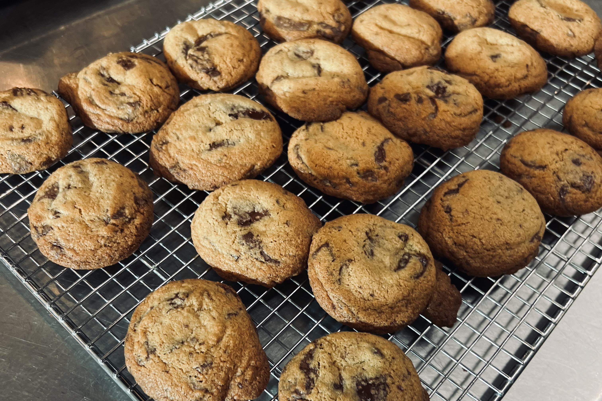

Chocolate Chunk Cookies
These came out of Week 2 of culinary school — made for the class, pulled at the right moment, finished with salt. Simple recipe, all about execution.

Yield: about 20 cookies
Ingredients
- 6½ oz (185 g) all-purpose flour
- ¼ tsp baking soda
- Pinch salt
- 4½ oz (125 g) butter, softened
- 5¾ oz (165 g) dark brown sugar
- ½ tsp vanilla extract
- 1 egg, beaten
- 8 oz (225 g) semi-sweet or dark chocolate, chopped
- Maldon sea salt, for finishing
Directions
- Preheat oven to 350°F.
- Whisk together 6½ oz flour, ¼ tsp baking soda, and a pinch of salt in a bowl. Set aside.
- Cream 4½ oz butter and 5¾ oz dark brown sugar in a stand mixer with the paddle attachment until light in color and fluffy, 2–3 minutes on medium-high speed.
- Add 1 beaten egg and ½ tsp vanilla, beating until just combined. Add the flour mixture and beat on low until almost incorporated.
- Add 8 oz chopped chocolate and mix until just combined.
- Portion the dough evenly with a scoop onto a parchment-lined baking sheet, leaving 2 inches between each cookie.
- Bake until just lightly golden around the edges and still pale in the center, 10–12 minutes. Cookies will finish baking on the warm sheet. For a crispier cookie, bake an additional 5–8 minutes.
- Sprinkle with Maldon salt immediately out of the oven.